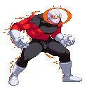
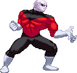

Defying Glare (LV1)
Jiren needs only to close and then open his eyes to attack his enemy!
Upon being hit by his glare, the opponent is frozen in mid-air and then pummeled by unseen attacks, ending with a wall-bounce.
If you hold the Punch button, you can delay the glare attack from coming out.
During this delaying state, he has massive amounts of armor and can take pretty much any attack that's thrown at him.
You can hold/delay it as long as the opponent is in an attack state.
Upon tanking projectile attacks the range on the glare attack is increased to fullscreen.

Blazing Storm (LV1)
Jiren swipes his charged energy across the screen and it materializes in a carpet bombing.
A couple of volleys of fireballs are shot and Jiren can move around as they are being fired.
Even if Jiren gets hit, the fireballs continue to fire.


Colossal Uppercut (LV1)
Simple, effective and powerful, a perfect move for Jiren. Jiren uppercuts so hard it creates a fiery pillar around him.


Magnetron (LV1)
A super grab, Jiren sends the opponent away off-screen where he leaves them to detonate, after which they are knocked back on screen again.
If you hold Up during the first half of the attack, the opponent will fly away into a slightly different angle.
The simplified command (which can be toggled on or off in the config.txt) for this move is QCBx2+K.
Colossal Uppercut RAGE (LV2)
Same move but more AWESOME! Plus, Jiren gains some extra armor attributes for a while after performing it.
Magnetron RAGE (LV2)
This LV2 version doesn't send the opponent away, instead Jiren traps them in a fiery energy dome that deals a whole bunch of hits.
During this time, Jiren is free to attack the opponent but doing so will end the energy dome prematurely.
The simplified command (which can be toggled on or off in the config.txt) for this move for this is QCBx2+2K.
Jiren the Grey (LV3)
Jiren leaps up in a blaze, attempting an aerial body slam. If this connects, he'll flash-kick the opponent into the air and deals with them there.
When performed in Beyond Strength Mode, depending on how far your Beyond Strength Bar is filled, the ender is replaced by one of these Finishers:
LV1 - Cratering Strike.
LV2 - Orbital Uppercut.
LV3 - Re-entry Warhead.
LV1 - Cratering Strike.
LV2 - Orbital Uppercut.
LV3 - Re-entry Warhead.